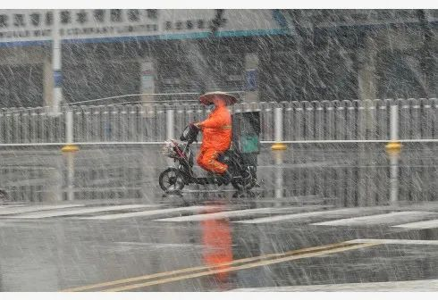
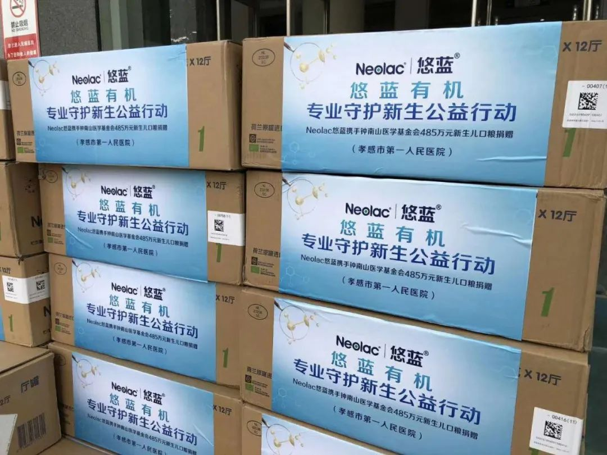

口述实录 | 一个普通军人的抗疫纪实
原文链接 备份链接 我希望这些行为能够影响其他人也加入“管闲事”的行动中来，这既是一个党员应该做的，也是一个军人应有的担当。 口述 | 苏雨昕 整理 | 周 洁 这个春节过得和以往都不相同。 整个正月，我没能回家。倒不是因为我去过武汉， …
2月22日，湖北黄冈封村封路的第14天。面对镜头，一位母亲一边安抚着怀中的孩子，一边录制Vlog。孩子在母亲的怀中时不时的翻腾一下，似乎在找寻着什么。
“今天我们家孩子的奶粉已经喝完了。” 这位来自湖北黄冈的Vlog博主，在其视频博客上分享了自己的遭遇。封村封路的状态下，外出采购的机会越来越少，随着生活物资的消耗，一些日用品变得稀缺起来。作为母亲，为孩子购置足够的奶粉成了当下亟待解决的问题。
这位母亲是幸运的，在村支书和母婴店的帮助下，当天得到了急需的奶粉，解决了眼下的燃眉之急。但在黄冈类似的情况并非孤例。

雨雪中的武汉街头
2月15日，武汉的天空飘起了雪花，为了疫情防控需要，大部分的商铺门店仍然没有恢复营业，部分网友也开始通过网络向媒体反映，目前武汉地区开始出现婴幼儿配方奶粉缺货断货的情况。一些市民甚至担心，“奶粉会不会像口罩一样，变得一粉难求。”
1
“近期有市民反映，婴幼儿配方奶粉不好买，一些超市也出现了婴幼儿配方奶粉缺货断货的现象。”2月22日，湖北省新型冠状病毒肺炎疫情防控工作指挥部召开第30场新闻发布会，一位媒体记者提出了这样的问题。
“婴幼儿奶粉是一个非常特殊的产品，虽然很小众，但非常重要，而且具有不可替代性。目前湖北省婴幼儿奶粉保有量是1600吨，可以满足全省婴幼儿饮用的时间是一个月以上。”面对提问，湖北省商务厅厅长秦军坦言，“前一段时间，因为防疫的需求，各家母婴店都没有营业，所以导致了结构性的短缺。”
“黄冈属于这次疫情的重灾区，经销商储备的量，是能满足一个月的刚需。”面对疫情期间的新情况，蕲春县大拇指母婴生活馆连锁总经理周航海表达了自己的担心，“由于封村封路，在配送等环节上感到非常吃力，加之物流尚不通畅，一些经销商的库存告急。”
封城、物流停滞等问题，让身在邻省湖南的海普诺凯生物科技有限公司总经理刘育标，与他所带领的悠蓝品牌团队感同身受。作为乳业从业者，他发现，为了配合疫区防控疫情的需要，母婴门店均处于歇业状态，“很多孩子在疫情期的口粮供应情况非常令人揪心。”
更为重要的是，疫区的一些特殊环境，造成了母婴之间的分离。一线的医务工作者、疫情确诊及留院观察患者，和身处隔离区内提供各种服务的妈妈们只能暂时与孩子相分离。
尤其是有妈妈在分娩时感染病毒成为确诊病例，孩子出生也一同被确诊的消息传出，孝感米可贝贝/爱婴屋母婴连锁总经理程峰感叹，“小宝宝一出生就遇上了这样的灾难。”在他看来，母亲感染之后，母乳不能供给孩子，宝宝也不能在母亲的怀抱，“在这种情况下的时候，小宝宝是没有安全感的。”
作为孩子的妈妈，长期关注母婴领域的微博博主袁菁介绍，“医院出于人道主义和现实的需要，往往会储备一定数量的婴幼儿配方奶粉以备不时之需。”但由于疫情发展迅速，这样的储备在湖北地区变得捉襟见肘。袁菁观察到，“客观上的条件不允许”，使得婴幼儿配方奶粉的作用更加明显，需求也更加突出。
“最小的确诊婴儿才出生30个小时，有不少母亲被确诊隔离的时候，孩子还在哺乳期。”1月中旬，疫情发生后，刘育标时常关注着有关疫情的各类新闻报道。
很快，行业数据以及来自全国各地合作伙伴的信息，汇总到了悠蓝团队手中，十倍于平时的会员电话咨询，普遍都在询问供应相关的问题，更加印证了他的判断，“当前物资的匮乏还是很严重的。因为疫情来得非常突然，都没有提前预备，加上物流的管控等原因，宝宝的口粮受到很大影响，特别是疫区。”
2
悠蓝团队发现由于大量医疗资源向疫情防控工作倾斜，加之疫情防控需要，疫区普通民众无法顺利前往医院等医疗卫生机构，疫区医疗健康咨询与相关科普工作受到了较大影响。尤其是其所处的婴幼儿健康领域，大众对于这方面的需求又往往较为急迫。
面对复杂而严峻的情况，悠蓝品牌结合企业自身优势，将目光聚焦到了两个方面。一方面着手恢复企业节后复工运营，保障物资的供给；另外一方面聚焦疫情期宝宝的营养需求及科学防护问题。
其实早在2月初，悠蓝品牌便通过微博等自媒体，在线上开展了一系列疫情防护与婴幼儿营养相关的科普活动。邀请相关高校、一线儿科、营养科专家进行，并在此基础上建立起线上免费咨询平台。“我们一直在线上免费提供着专家咨询服务，和专家的线上讲座科普，这是线上的举措。”
另一方面，在刘育标看来，物质上疫区最缺的就是两个东西，一个是医疗用品，一个是民生物资。
疫情爆发以来，湖北省、武汉市政府在解决物资供应问题上出台了一系列的政策，而保障民生物资则成为备受外界关注的焦点。在这样的指导思想下，商务、交通等有关部门纷纷为供应物资企业排忧解难，保障湖北民生需求的“生命线”。
“保障供应”也成为悠蓝的首要目标。“从2月7日开始，公司全面拿到了地方政府的配送通行证。”因此，在完成线上支持的同时，悠蓝开始着眼于线下。
“我们有全国接近两万个门店系统，联合了一万多家有配送能力，并且获得当地政府审批资格的终端合作伙伴，无接触送货上门。”拿到通行证，在地方政府和交通主管部门的指导下，悠蓝在各地的经销商与合作伙伴便开始着手安排货物运送工作，这些措施在一定程度上缓解了新生婴幼儿口粮不足的问题。

准备配送的运输车队
作为荷兰进口的悠蓝有机婴幼儿配方奶粉，其原产地荷兰并未受到本次疫情的影响，因此生产等环节均运转正常，物资充裕。加上运输过程全程通过中欧快线，保证了从生产到运输，不受疫情影响，能够持续为国内用户供货。
“专车发送到每个城市的终端网点，也就是经销商、合作伙伴那里，他们在当地拿到特殊婴幼儿口粮的配送许可后，采取线上下单，线下集中配货，无接触式的配送方式。”刘育标展示的照片显示，配送人员配合消费者，通过线绑着桶、小篮子等，将商品提上楼，也有将装着物资的塑料袋放到门口，然后退到安全距离后，等待消费者取走货物，确保了物资的供应。
行动开始后，悠蓝团队也开始意识到，如果想要贡献更多的力量，需要找到专业的人一起同行。
就在悠蓝团队不眠不休商讨公益行动方案之际，持续援助一线的广东钟南山医学基金会的伙伴，也在为疫区一线医院防护物资以外的物资短缺问题感到忧心。“除了防护物资以外，包括生理护垫、奶粉、方便面等物资，在医院都是有需求的。”
在“专业的人做专业的事”的思想指导下，悠蓝团队找到广东钟南山医学基金会，经过一系列交流与沟通，悠蓝联合澳优U基金、钟南山医学基金会、各地慈善总会、新浪新闻、新浪育儿等机构，发挥各自专长，共同开启了“悠蓝有机，有爱有生机”专业守护新生的公益活动。
3
“两万两千多罐，价值近一千万的悠蓝有机配方奶粉和一百二十四万的防护物资”，对于这次的公益行动，刘育标如数家珍，“宝宝口粮、口罩、消毒剂，总价值1100万。”这些物资在二月中旬开始，陆续送到一线医院，让医院根据实际需求定点输送。
为了应对疫情需要，悠蓝从国内国外采购、调集一批防护物资，其中不乏高级别的防护用品。在面对自身团队防护用品仍然短缺的情况下，悠蓝团队却一致决定，将这批高级别的防护用品，优先给到一线的医护人员。
物资储备的逐渐充裕，但疫情防控体系下的湖北，交通运输仍是难题，最后一公里的物资送达，成为刘育标所在的悠蓝团队面临的最大挑战。
动员更多的力量参与，成为“悠蓝有机，有爱有生机”公益项目的又一大目标。悠蓝团队将目光再次投向了遍布湖北的经销商及合作伙伴团队，发出倡议，希望更多的伙伴能够与悠蓝一道，“逆行而为，驰援湖北”。
作为悠蓝的合作伙伴，湖北爱心铭扬商贸有限公司总经理李小莉及其团队，选择在第一时间加入悠蓝的“逆行”大军。“每天工作是14个小时到16个小时”， 只为尽快将物资送抵一线。
由于疫情的原因，部分地区存在一些恐慌性囤积奶粉的情况，在李小莉看来是“奶粉很好的销售时期”，而悠蓝的选择是捐赠而非销售，这让她觉得“这是一家很大爱的一个企业。”在大爱的驱使下，李小莉及其团队将900听共计75件悠蓝婴幼儿配方奶粉，顺利的送达广水市第一人民医院。
李小莉并非个例，为了解决最棘手的最后一公里问题，更多的经销商和合作伙伴在第一时间加入到悠蓝的倡议之下。
 合作伙伴——湖北十堰爱婴贝美在积极伸出援手
合作伙伴——湖北十堰爱婴贝美在积极伸出援手
疫情发生以来，各种信息不断影响着程峰，“悠蓝刚好在这个时候提出这种倡议，我愿意去配合悠蓝去做这个事情。”在悠蓝的倡议下，孝感米可贝贝/爱婴屋母婴连锁总经理程峰及其团队开始着手准备。由于疫情影响，物流企业大量物资堆积，要想及时将货物送抵最需要的人手中，就需要自己去货仓里翻找，一遍又一遍的寻找与腾挪，汗水打湿了工作人员的衣服。
努力终究是有回报的，2月18日，900听共计75件悠蓝婴幼儿配方奶粉，经过程峰及其团队，先后送达孝感市中医院、孝感市第一人民医院。

送达孝感市第一人民医院的物资
作为老一批合作伙伴，面对疫情下产生的诸多难题，蕲春县大拇指母婴生活馆连锁总经理周航海对悠蓝这次的行动非常认可。“克服了很多困难，能够把商品发到各个经销商的指定地点，还能配送到指定捐赠的医院，他们是付出很大的努力才能做到的。”400听共计33件悠蓝婴幼儿配方奶粉送达蕲春县妇幼保健院。

收到捐赠奶粉的家长
一罐罐奶粉换回了一次又一次的感谢，“当紧缺的奶粉送到新生儿的宝爸宝妈手中，他们眼睛里的忧愁变为喜悦的时候”，周航海觉得自己和无数伙伴的努力没有白费，再苦再累也都值得。
平日里，一罐奶粉可能是生活的必需品，但无关生命。疫情下，一罐奶粉却成为了疫区民众翘首以盼的紧俏物资，承载着大爱。当一罐奶粉克服了交通管制、人力不足等诸多问题，送抵疫区，换来的不仅仅是来自疫区医疗团队和婴幼儿家长的感谢，更是对于悠蓝这个雪中送炭品牌的认可。
（应受访者需要袁菁为化名）
（专题）
原文链接 备份链接 我希望这些行为能够影响其他人也加入“管闲事”的行动中来，这既是一个党员应该做的，也是一个军人应有的担当。 口述 | 苏雨昕 整理 | 周 洁 这个春节过得和以往都不相同。 整个正月，我没能回家。倒不是因为我去过武汉， …
原文链接 备份链接 作者：北林 编辑：北林 特别不感谢：给阻止疫情制造麻烦的混蛋们 我听来了许多虚假的、不符合主流的、刻意制造矛盾的流言蜚语; 发这里是告诉大家: 不要相信，不要转发， 都是假的，不要去调查， 尤其是记者们，以下都是假 …
原文链接 备份链接 林青霞发心起愿，为抗击疫情尽自己的努力——要给最有需要的人送去最及时、最有用的物资，并将这份关爱送到祖国大陆和台港澳同胞们的手中。 文 | 王悦阳 近日，林青霞的一封亲笔信，感动了无数人。 作为中国华语影坛最具传奇色彩 …
原文链接 备份链接 应该做一个自私的人，还是坚持自己：做一个对社会有用的人？ 口述 | 高 集 整理 | 沈 林 今天是我自愿隔离在家的第14天，按理说，我已经可以正常出门了。但是最近发生的事，让我的心情很复杂。 我叫高集，20多岁的时 …
原文链接 备份链接 这个冬天，疫情阴霾笼罩江城，居家的普通人也在经历着一种特殊的考验：面对骤然失序的生活，人们应该如何重建日常生活的秩序？她们尝试用镜头记述点滴，寻找答案。 ··············· ❶ *** “白大褂脱下来 …